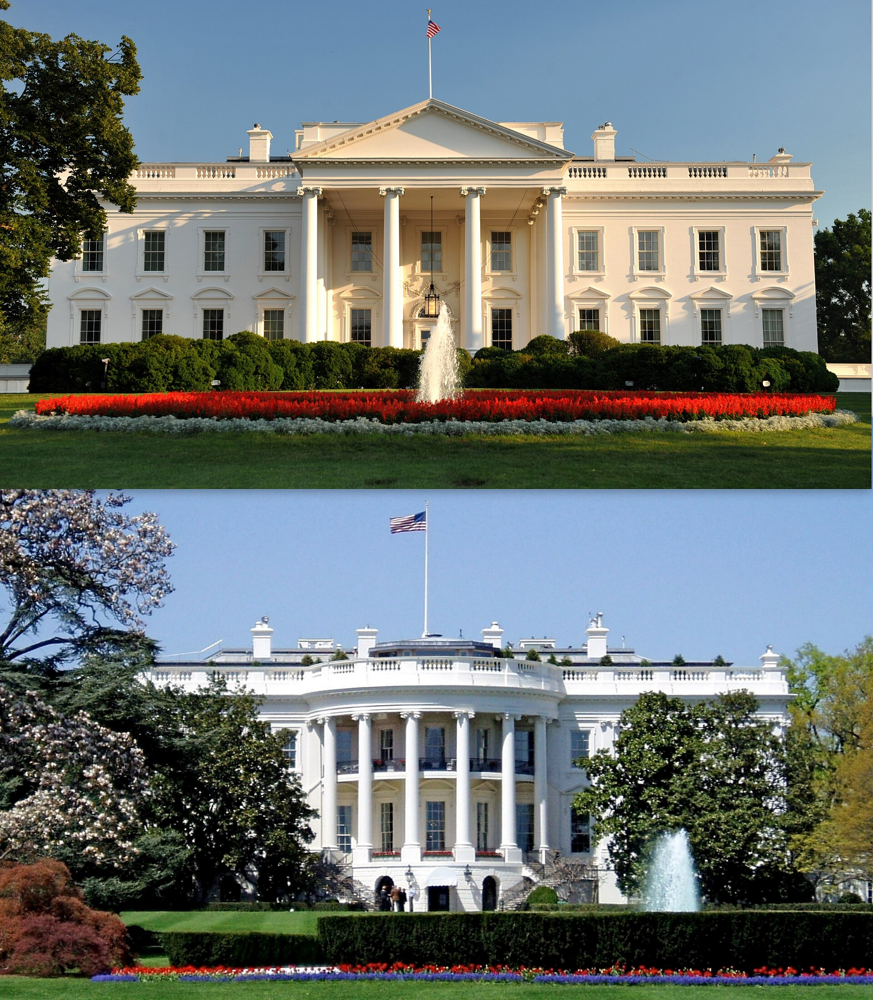

Vol. I · No. 126 · Wednesday, September 30, 2026 · 11 items · 9.9 min read
The first appellate word on whether training an AI is fair use arrived sealed.
Law · Philadelphia and Wilmington
The first appellate ruling on AI training and fair use went against the machine, and arrived sealed
The Third Circuit sits in Philadelphia; the judgment it affirmed came from Delaware. — Wikimedia Commons
The Third Circuit affirmed on Tuesday that training a legal research tool on is not fair use. It is the first appellate holding in the country on AI training and copyright, and it went to the copyright holder. What the public actually received was a one-page judgment reading AFFIRMED. The panel filed its reasoning under seal and gave the parties ten days to propose redactions. Judges L. Felipe Restrepo, and Tamika Montgomery-Reeves heard argument on June 11. Montgomery-Reeves wrote.
So Ross’s use is not transformative.
— Judge Stephanos Bibas, February 2025, in the ruling now affirmed
The judgment under review belonged to , who held in February 2025 that 2,430 of 2,834 disputed headnotes were protectable and infringed. Dale Cendali of Kirkland & Ellis argued for Thomson Reuters; Mark Davies of White & Case for ROSS. The contested ground was , and specifically whether the relevant market includes one for licensing training data.
has been dead since 2021, when it closed its platform under the cost of defending a suit filed in 2020. The precedent, not the damages, was always the asset. Every generative AI defendant in the country now has to reprice off a four-factor analysis that nobody outside the panel has read, while the two parties, one of which no longer exists, spend ten days arguing over how much of it the rest of us may see.
Corporate · New York
Paramount draws $109 billion of orders for the investment grade leg of the Warner Bros. debt
The investment grade tranche of Paramount Skydance’s acquisition financing drew more than $109 billion of orders on Tuesday, about 3.6 times the size the banks had signalled, and printed at $30 billion across eight tranches running from two years to forty. The longest matures in 2066 and was talked around 365 basis points over Treasuries. Bank of America and Citigroup lead. A separate loan offering drew $10 billion of demand the same day. is the number the syndicate will quote.
The bonds sit inside a package of roughly $52 billion against a purchase valuing Warner Bros. Discovery at about $110 billion, or $31.00 a share. Pro forma leverage runs near 7.6 times through 2027, which is why S&P cut Paramount to on September 24. Paramount shares closed at $9.97, down three percent. The target close is October 7, a accrues past it, and the settlement of twelve states’ antitrust suit is still waiting on a judge.
Culture · Manchester
Manchester City guilty on all but one of 115 charges, with £921 million of misstated accounts
An independent Premier League commission found Manchester City guilty on Tuesday of all but one of 115 charges covering nine seasons to 2017/18, and put the misstatement at £921.4 million: £855.2 million of overstated revenue and £66.2 million of understated cost. Of the overstatement, £830.7 million was owner money from dressed as third-party sponsorship. The commission used the word sham, and found that some club witnesses gave evidence they knew to be untrue.
The arithmetic is the finding. City booked £949.9 million of commercial revenue to Abu Dhabi sponsors over the period, of which £119.3 million was actually paid by those sponsors. Seven of the charges are breaches and thirty-five are for refusing to cooperate with the investigation. Sanction goes to a separate private hearing before the same commission under . City has until Friday to appeal and calls the decision unsafe.
Artificial Intelligence
The labs, the capability, and the law it is eating
AI · Washington
Six frontier labs sign a voluntary White House accord that Trump calls morally binding

The 2023 voluntary commitments were signed in the same building and produced nothing. — Wikimedia Commons
Six laboratories signed a Joint Commitment on Frontier Responsibilities at the White House on Tuesday. Dario Amodei, Sundar Pichai, Mark Zuckerberg, Jensen Huang, Elon Musk and OpenAI president were in the room. The text runs to four planks: build internal controls, hire an independent external auditor to test whether they work, put a board committee over the auditor’s reports, and consider codifying all of it into law later. Trump said he was seeing tremendous self-policing, and floated naming an overseer and a committee of roughly ten people.
Nothing in it is enforceable, and the shape comes from somewhere other than AI safety. Internal controls, an external auditor, a board committee: that is the Sarbanes-Oxley assurance stack, which tests whether controls exist and function rather than whether any model is safe. of UNSW called the signatories incompetent and careless. David Krueger of Montreal put the risk reduction at about one percent. It is the second time this has been done: produced nothing.
Corporate · San Francisco
OpenAI seeks $30 billion at a $1.4 trillion valuation, a 64 percent markup in six months
OpenAI is in early talks to raise at least $30 billion at a $1.4 trillion valuation, Bloomberg reported on Tuesday, a 64 percent markup on the $852 billion post-money it set in March. Reuters puts annualised revenue near $70 billion. The round is a : Altman has ruled out listing this year and the offering is now 2027 work. Anthropic’s leaked prospectus points at roughly $2 trillion.
Markets & Deals
Issuance, takeovers, and the people who set the price of money
Corporate · Washington and Detroit
The ten-year closes at 5.26 percent, highest since 2002, with October priced at 72.5 percent
The target range has been 3.75 to 4.00 percent since September 16. — Wikimedia Commons
The ten-year note closed Tuesday at 5.26 percent on Treasury’s own par curve, its highest since 2002, with the thirty-year at 5.59 and the two-year at 4.89. Futures put the odds of a hike at the Fed’s October 28 meeting at 72.5 percent. Governor Michael Barr, speaking in Detroit, said what is clear right now is that inflation is too high, and counted only two of the past twenty months as consistent with two percent core inflation, against unemployment of 4.1 percent and payroll growth averaging about 80,000 a month.
The shape is the interesting part. The two-year fell three basis points while the long end rose, steepening from 32 to 37 basis points on the day the ten-year made a twenty-four-year high. That is a market pricing a hike it does not expect to be followed by another. No coupon auction fell in the window; the 52-week bill cleared at 4.400 percent on a 3.07 bid-to-cover. The 72.5 percent figure comes from , not from a poll.
Corporate · Miami · South Florida
Carnival earns its way back to investment grade, and takes the whole Miami cruise complex up with it
Carnival printed a record quarter on Tuesday: $8.435 billion of revenue, $1.9 billion of net income, adjusted earnings of $1.43 against $1.35 guided, and up 2.4 percent against 1.2 percent guided. Total debt is below $24 billion against $36 billion in 2023, no secured debt is left, and S&P returned the company to investment grade at BBB minus. The stock rose 13.4 percent to $25.11 on roughly 246 percent of average volume, carrying Royal Caribbean up 7.5 percent and Norwegian 3.4 percent. More than half of 2027 revenue is already booked.
Law & the Courts
The docket, the regulators, and the profession
News · Atlanta and Miami · South Florida · cross-spectrum CLR
Eleventh Circuit will not pause the sanctions that sent Trump’s Miami lawyer to the Florida Bar
Monetary sanctions and fee proceedings continue separately. — The Morning Brief
The Eleventh Circuit refused on Tuesday to pause the sanctions Judge imposed in July over the collusive suit against the IRS. Judges Adalberto Jordan, Robin Rosenbaum and Kevin Newsom found no strong showing of likely success on appeal and no evidence rebutting the district court’s collusion findings. The sanctions are not money. Alejandro Brito goes to the Florida Bar. Daniel Epstein is barred from admission in the Southern District of Florida for a year.
The panel disposed of the First Amendment argument by narrowing it. The bar on calling the agreement a settlement reaches only how the parties describe it in official proceedings, not their public speech, so it is not a prior restraint. The government’s own stay brief is the document worth reading: Acting Deputy Attorney General R. Trent McCotter called the order illogical and contrary to precedent, and warned that leaving it in place means the circuit should prepare for an onslaught of sanctions motions.
The World
Consequential geopolitics, and how each side tells it
News · Baghdad and Washington · cross-spectrum LLC
American forces leave their last Iraqi bases, and the disarmament deadline slips to 2027
Baghdad has declared the handover a national holiday. — Public domain / Wikimedia Commons
The last American troops leave Iraqi bases today, ending a presence that began with the 2003 invasion, peaked near 170,000 personnel and cost about 4,500 American lives. Roughly 2,500 troops were in the country this year and only a few hundred remained by Saturday. The withdrawal was negotiated in 2024 and is being executed in the middle of an active war with Iran, which closes . A residual force stays in the Kurdistan region, where the Kurdish commander Sirwan Barzani counts close to a thousand drone and missile attacks and no air defences.
The political price of the exit slipped on the same day. Prime Minister promised Trump in July that the Iran-aligned militias would be disarmed by September 30; he is now asking until the middle of 2027. A commander of the called the departure a historic victory and a crushing defeat. Marco Rubio calls al-Zaidi a very willing partner.
News · Washington · cross-spectrum CR
The Energy Department offers the last forty million barrels as diesel tops $6
The Energy Department asked on Tuesday for bids on up to 40 million barrels from the Strategic Petroleum Reserve, drawn from Big Hill and Bryan Mound and delivering in November and December. Bids close October 6. It is the final tranche of a 172 million barrel American commitment made inside an IEA-coordinated release, of which 133 million has been awarded. The reserve ended August at 286.6 million barrels and the statutory floor for non-emergency withdrawals is 252.4 million, so this one lands near the bottom of the legal room. Diesel is above $6 and distillate stocks run 14 percent under the five-year average.
Framing noteFox carries Energy Secretary Chris Wright saying the United States leads the coordinated effort to stabilise oil markets; Semafor frames the same release as pre-election price management that will not move the needle.
Entertainment & EASL
Rights, contracts, and the business of the audience
Culture · Topeka
Roblox pays Kansas $9.8 million and accepts age assurance, with a $10 million tripwire
Kansas is the attorney general’s second platform resolution this year, after Meta in August. — Wikimedia Commons
Roblox will pay Kansas $9.8 million over three years and fund a $500,000 child-safety campaign, under a settlement Attorney General announced on Tuesday. The injunctive terms are the substance: for every user, parental controls tied to a linked parent account, chat for under-18s restricted by default to a similar age band, moderation aimed at conversations migrating off the platform, and a law enforcement liaison paid for by the company and stationed in Kansas.
Breach any term and Roblox owes a further $10 million, . Chief safety officer Matt Kaufman called the deal an important blueprint for how the technology industry and regulators can work together proactively, which is a company volunteering a template rather than resisting one. Roblox is separately defending a securities fraud class action over what it told investors about child safety, with Ohio’s public pension funds seeking to lead.
Compiled by Matthew Yellin · mattyellin.com · Est. May 2026 · A cross-spectrum brief drawn each morning from wires, filings, and the trade press